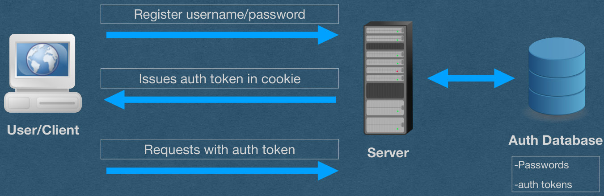
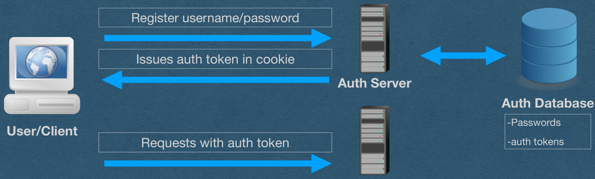
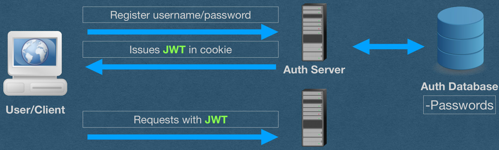
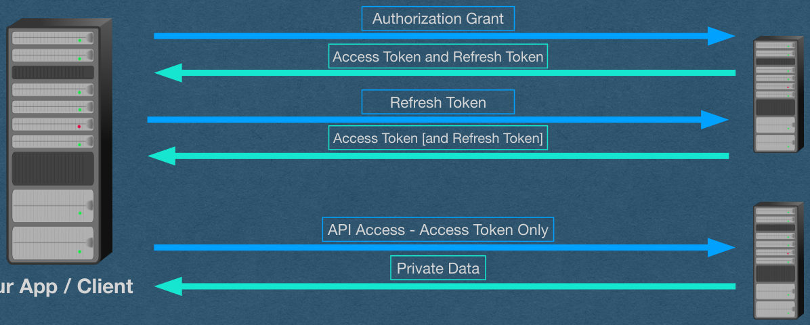

JSON Web Tokens (JWTs)
CSE312 — Web Development
JSON Web Tokens (JWTs)
Why JWT?
- We’ll use JWTs for persistent authentication
- We currently use authentication tokens to solve the same problem
- Why do we need a new mechanism?
- What’s wrong with auth tokens?
Recall Auth Tokens
- Server issues an auth token on login
- Store token in database on login
- Lookup token in database for authentication
Register username/password
Issues auth token in cookie
User/Client
Auth Database
Requests with auth token
Server
-Passwords
-auth tokens

Recall Auth Tokens
- The token is opaque
- Random meaningless bytes
- Database lookup is required
Register username/password
Issues auth token in cookie
User/Client
Auth Database
Requests with auth token
Server
-Passwords
-auth tokens

Recall Auth Tokens
- When your app gets HUGE
- Make it distributed
- Separate parts of your app onto different servers
Register username/password
Issues auth token in cookie
Auth Server
Auth Database
-Passwords
User/Client
Requests with auth token
-auth tokens
App Server

Recall Auth Tokens
- App server needs to verify the auth token
Register username/password
Issues auth token in cookie
Auth Server
Auth Database
-Passwords
User/Client
Requests with auth token
-auth tokens
App Server

Auth Tokens - Distributed
- App server needs to verify the auth token
- Option 1: Shared DB
- App server connects to the same DB as the auth server to lookup the auth token
- Advantage: Code is simple. Same thing we’ve been doing
- Disadvantage: Slow and complex architecture
- DB must support multiple servers
- App must connect to the shared DB on every authenticated request
Auth Tokens - Distributed
- App server needs to verify the auth token
- Option 2: Server-Server Communication
- App server sends a request to the auth server to verify the token
- Advantage: Avoids a shared DB
- Disadvantage: Slow
- Every authenticated requests requires the app server, auth server, and the auth DB
- Might as well have a monolith app (It’s effectively not distributed)
Introducing JWTs
- Instead of auth token
- Issue a self-contained JWT
Register username/password
Issues JWT in cookie
Auth Server
Auth Database
-Passwords
User/Client
Requests with JWT
App Server

JWT
- JWTs are tokens that are designed to be self- contained
- Contain all information needed for authentication/ authorization
- No need to talk to the DB or the auth server
- Auth server doesn’t even need to store JWTs
- App server receives a request containing a JWT
- Verify the token locally
JWT
- JSON Web Tokens
- Often pronounced “jot”
- JSON
- Contains a payload that must be a JSON object
- Web
- Encoded using url-safe characters
- Can be used in HTTP headers
- Tokens
- Typically used for authentication/authorization
- Can be used to solve any problem that wants tokens
JWT - Structure
- A JWT is composed of three parts
- Headers
- Specifies the type of token, and algorithm used for signing
- Claims
- The payload of the token
- Can contain the identity of the user (Authentication) and any scopes they can access (Authorization)
- Signature
- The signature of the token using the algorithm specified in the headers
JWT - Structure
- Each of the three parts are Base64URL encoded
- Base64
- Maps 3 bytes of arbitrary data into 4 ASCII characters
- 64 characters: a-z, A-Z, 0-1, ‘+’, ‘/’
- If length%3 != 0, pad with ‘=’
- Not suitable for the web
- Base64URL
- Replace ‘+’ and ‘/’ with ‘-’ and ’_’
- Omit the padding
- This avoids all url reserved characters
JWT - Structure
- Three Base64URL-encoded parts are separated by ‘.’
- eyJhbGciOiJSUzI1NiIsInR5cCI6IkpXVCJ9.eyJ1c2VybmFtZSI6IkFsaWNlIn0.Bh0…
- This token looks opaque
- It is not!!
- Base64URL is not a hashing algorithm!
- Base64URL is not encryption!
- Your JWTs are effectively plain-text
- This token has the claim: {“username”: “Alice”}
JWT - Usage
- JWTs are effectively plain text
- Everyone with access to the token can see the claims
- Anyone can generate their own tokens with any claims they choose
- Trivial to impersonate other users
- Need to verify that the auth server issued the token
- Sign it!
JWT - Verification
- The issuer (Auth server) will cryptographically sign the JWTs it issues
- Apps will verify this signature
- Attackers cannot forge the signatures
- eyJhbGciOiJSUzI1NiIsInR5cCI6IkpXVCJ9.eyJ1c2VybmFtZSI6IkFsaWNlIn0.Bh0qjhE- gYMC3uQOORQ7yrsjUeESQ6fBqrt5dpGXRQ5i4z9FCsN1USZVw10MFZf9XPq5mt9 MLyMNSrMsvVnCFYcWONbmupgWxMi4MMkziy9LePgFosFX- SSb64mWZsE6t8MG657ZmvkmRpq7AINtOi4UZpFmpTcvNFrVRXIi8os9i6PcPbplBA yPq4a8sIxQXcLqyObr84CZQv3q67NFI- ZP0RQHu9qm65CxdchHVW7kuwTWyTvvZWNMS3Ga_9VY2QdYr8oyMAYDySCwta L5eTk8Zm8TNiBHLCD15H8A7IQ7_r2V7cXxeXBgDXfs1DqufcEv6lSsBN1i3rat096bxl PM183zTRKD-WYHLzIJV1FTRCms4lmwYlPfDski- nX41sWIvUk2FNtuWl1QcQmR8WVxFhXtmicka4caU83iL_zlTGVTswuW5Bd6UBsJ1c 9c_OBE28RnMtR23duJZsL7lTqCIn9H_7GvLrwWy1JgAp4CRqeiFR8j8vJne1XcIJJ9h JVWL-2bdbe6Iu_SAWUpmiAeXy3NfJaTibSSCANs2ple_eCY7mg1ebrGHIdNq9W3izj HwyNFAg8p5K3aNnv8rLe6yJhXg0CS94s3oLkhiEa83y4pvnjO2Adgm9o4Z3uE0Hb1n ZN_LJuOWMZbdPZavmPKlTFsSzUZ_hE0AdWtabc
JWT - Verification
- Public/Private key
- In CSE312, we’ll prefer to sign tokens with a private RSA key using the RS256 algorithm
- This algorithm computes a SHA256 hash of the headers and claims of the token
- Sign this hash using the auth server’s private key
- The Base64URL encoding of this signature is the 3rd part of the token
- App server has the auth servers public key
- Use the public key to verify the signature
JWT - Verification
- Public/Private key
- Attackers can generate JWTs to with valid headers and claims
- Attacks cannot forge the signature
- If the signature is not valid, do not accept the token
JWT - Verification
- Shared Secret
- Alternatively, all servers can control a shared secret used to both sign and verify signatures
- If the secret is not compromised, this is just as good a private key signatures
- Downside:
- Expands your attack surface
- Attacker who compromises any server has your shared secret
- Not wise if you’re issuing tokens that are verified by 3rd party servers
- Expands your attack surface
- Not allowed on HW5..
JWT - Encryption
- JWTs can optionally be encrypted to obfuscate the headers and claims
- I don’t have anything else to say about that
😅
• When the auth and resource servers are separate • Common for access tokens to be JWTs • Make them short-lived and issue refresh tokens
Recall OAuth
Authorization Grant
Access Token and Refresh Token
Authentication
Refresh Token
Server
Access Token [and Refresh Token]
API Access - Access Token Only
Resource
Private Data
Your App / Client
Server
